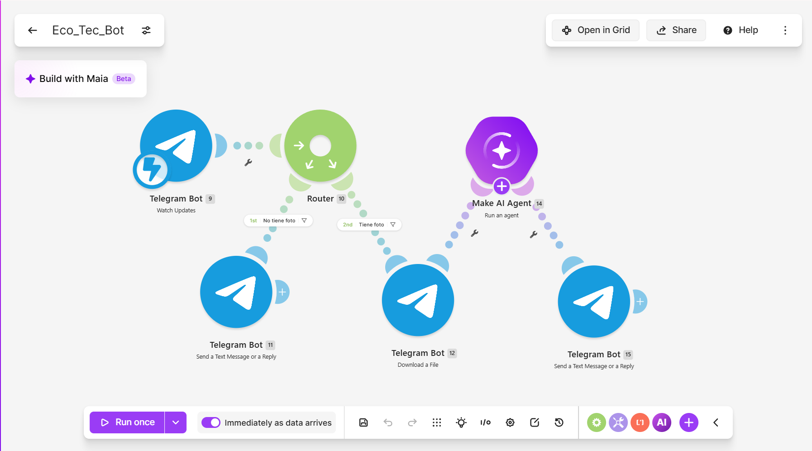

Evidencias del Proyecto Eco_Tec_Bot
Haz clic en los enlaces para ver cada evidencia:
📄 Reporte Académico de la Práctica
📄 Reporte Técnico del Escenario
📄 Resultados del Escenario
🗂 Blueprint del Bot (JSON)
🎥 Evidencia en Video
📷 Evidencia en Imagen
